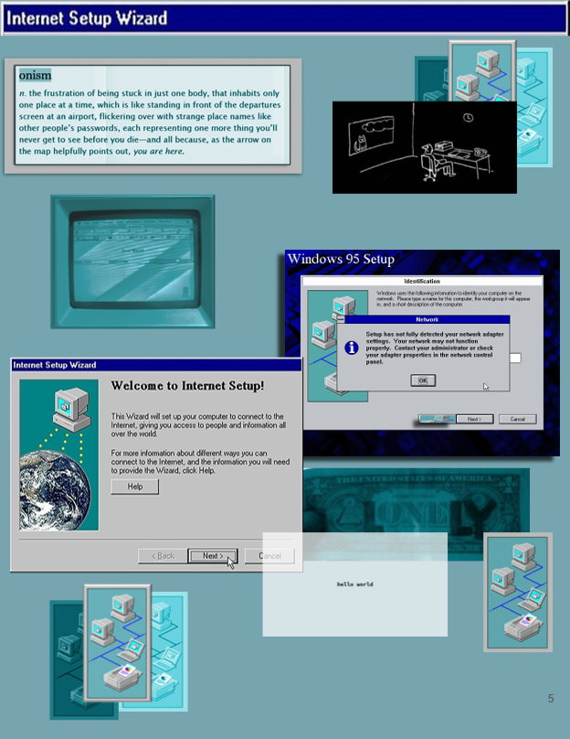
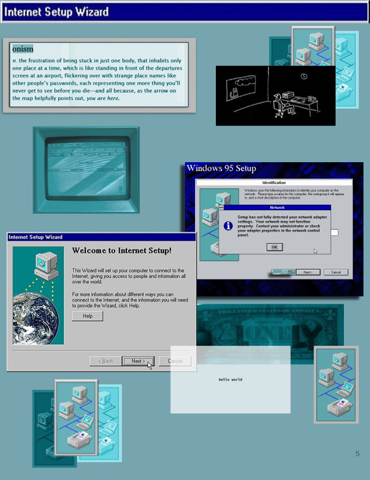
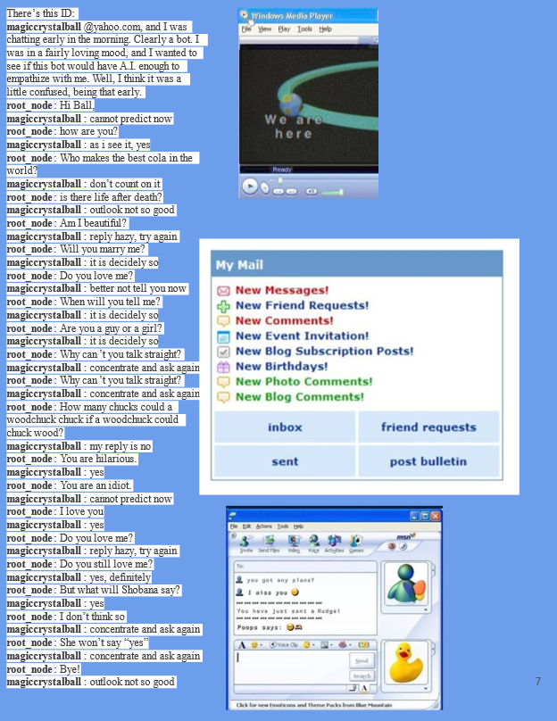
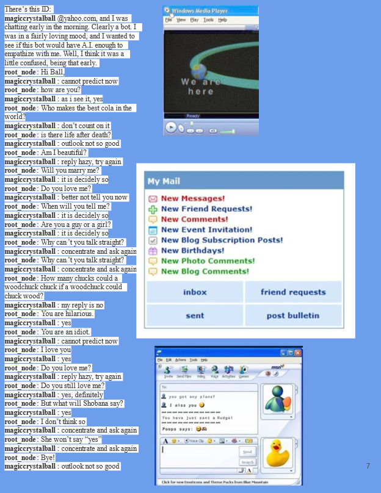
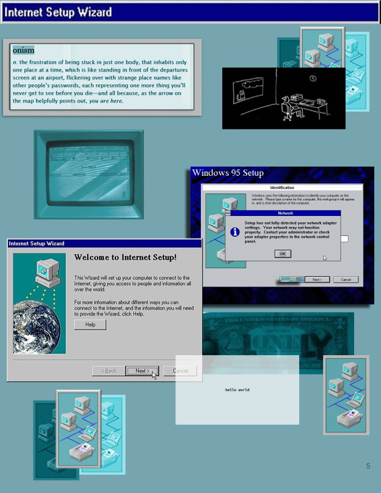
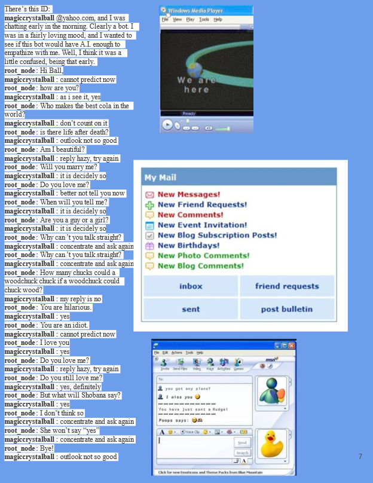
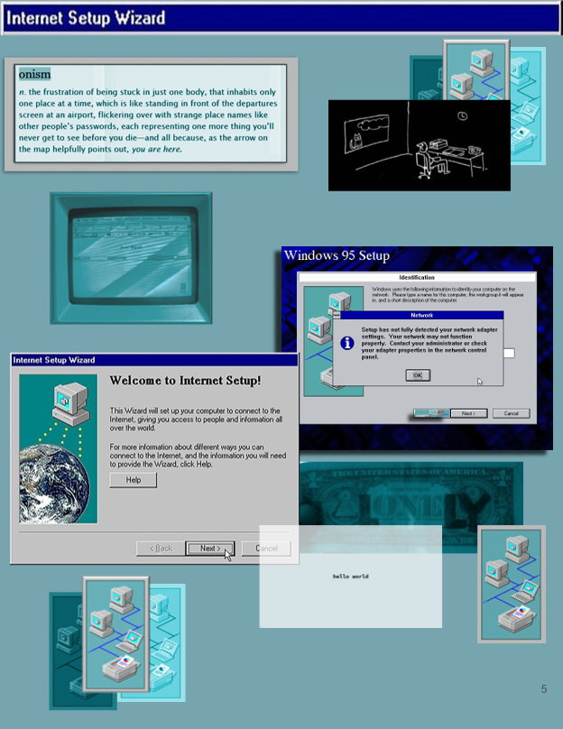
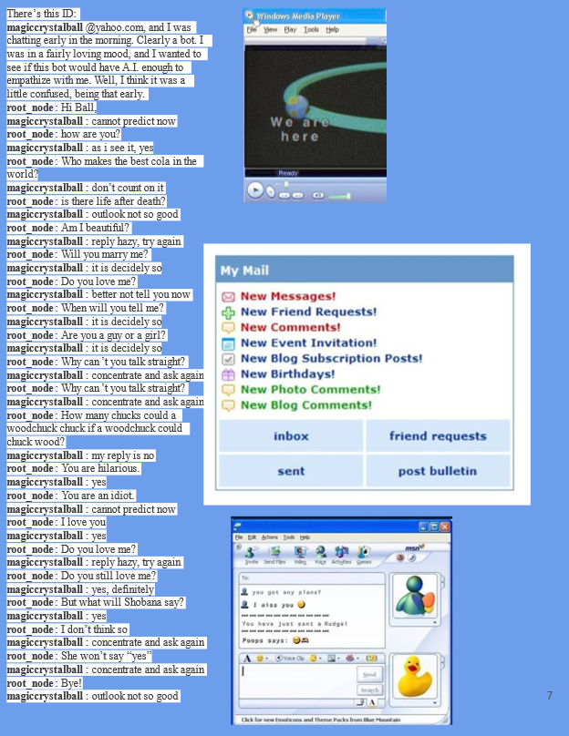

📖 Project 3: Artist Zine


 
 



 
The internet was once a place of boundless wonder—a new frontier filled with flashing banners, guestbooks waiting to be signed, and friendships built through pixelated avatars. It was a place where you could craft your own digital sanctuary, a homepage decorated with glittering GIFs and music that played without permission. My zine, Fatal Error, is a love letter to that era—a time when the internet felt like a community rather than an algorithmic machine.
As a child of the transition, I grew up in a world where the internet was an extension of life, not a replacement for it. There was a balance: we still ran outside, but we also rushed to the school computer lab to customize our MySpace layouts. The web was messy, chaotic, personal—a far cry from the sleek, homogenized platforms we see today.
This project is structured like a computer session from the past: it boots up in excitement, welcomes the user into the golden age of digital connection, then glitches, deteriorates, and ultimately crashes into the Blue Screen of Death. Each spread reflects a specific phase of internet history, weaving in the words from The Dictionary of Obscure Sorrows to capture the fleeting emotions tied to each stage.
The internet did not disappear—it evolved, streamlined, and, in many ways, hollowed out. What was once a collection of small, handcrafted spaces became a landscape dominated by corporations, engagement metrics, and an endless scroll. The creative chaos of the early web is gone, replaced by something colder, more predictable.
The zine ends with a system crash—a fatal error message that forces the reader to consider: what was lost in the process? And if we could reboot the internet, how would we do it differently?
In the end, CTRL + ALT + DELETE is a metaphor for waking up—not just from nostalgia, but from the modern internet itself.